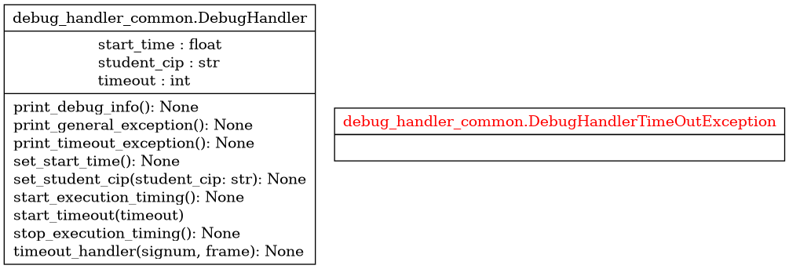

Module debug_handler_common
Diagramme de classe
{kind=link}
Code du module
- class debug_handler_common.DebugHandler[source]
Bases :
objectClasse à utiliser pour détecter et gérer les exceptions dans le code étudiant :
Copyright 2024, F. Mailhot et Université de Sherbrooke
- static print_debug_info() None[source]
- Méthode statique pour indiquer où a eu lieu une exception :
Accède au « stack trace »
Imprime le type d’exception, la valeur, la ligne de code et une portion du « stack trace »
- Returns :
void : Rien n’est retourné
- print_general_exception() None[source]
- Méthode pour indiquer (imprimer) qu’une exception arbitraire a eu lieu :
L’information au sujet de l’exception (son type, la ligne de code où elle a eu lieu) sera imprimée
- Args :
void : Tout est compris dans l’objet
- Returns :
void : Rien n’est retourné
- print_timeout_exception() None[source]
Méthode pour imprimer l’info d’une exception de temps d’exécution trop grand
- Args :
void : Tout est compris dans l’objet
- Returns :
void : Rien n’est retourné
- set_start_time() None[source]
Temps de début de l’exécution du code étudiant. Permet de mesurer approximativement la performance
- Args :
void : Ne fait que mémoriser le temps courant
- Returns :
void : Rien n’est retourné
- set_student_cip(student_cip: str) None[source]
Méthode qui permet d’associer le(s) cip(s) au débogage du code courant
- Args :
student_cip (str) : cip associé au code étudiant qui sera exécuté
- Returns :
void : Rien n’est retourné
- start_execution_timing() None[source]
Démarre le chronomètre pour identifier une exécution trop longue, conserve le temps de départ
- Args :
void : Tout est compris dans l’objet
- Returns :
void : Rien n’est retourné
- start_timeout(timeout)[source]
- Démarre un décompte temporel (valeur en secondes dans timeout) :
Détecte du code qui prend trop de temps à s’exécuter
- Args :
int : La valeur du délai
- Returns :
void : Au retour, l’alarme est démarrée et sera déclenchée au besoin
- exception debug_handler_common.DebugHandlerTimeOutException[source]
Bases :
ExceptionCette classe définit un nouveau type d’exception, utilisé pour capturer les problèmes d’exécution trop longue dans le code étudiant
Copyright 2024, F. Mailhot et Université de Sherbrooke
Note
Documentation créée le 13 févr. 2024.